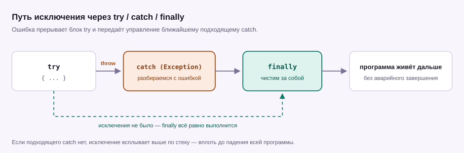

Урок 07 · 22 минуты · модуль 2
Исключения и отладка
До этого все примеры работали с правильными данными. В реальности пользователь введёт букву вместо числа, а файл окажется занят. Исключения — это способ не упасть молча и не упасть вообще.
Что такое исключение
Исключение — это объект, который сигнализирует: «дальше выполнять нельзя». Оно прерывает текущую строку и начинает подниматься вверх по стеку вызовов в поисках того, кто готов его обработать.
int[] numbers = { 1, 2, 3 };
Console.WriteLine(numbers[5]); // в массиве всего три элемента
Console.WriteLine("Эта строка уже не выполнится");Программа не «пропустит» ошибку и не напечатает ноль. Она остановится на пятой строке и завершится с ненулевым кодом.
Как читать стектрейс
Текст, который вываливается в консоль, выглядит страшно, но устроен просто: сверху — что случилось, ниже — где именно.
Unhandled exception. System.IndexOutOfRangeException:
Index was outside the bounds of the array.
at Program.<Main>$(String[] args)
in C:\dev\csharp\Hello\Program.cs:line 3in ...Program.cs:line 3 — это место в твоём коде. Всё, что выше и написано непонятными именами, — внутренности .NET. Смотри сначала на свой файл и номер строки.
try / catch / finally
Блок try — «попробуй это сделать». catch — «если сломается, сделай вот так». finally — «сделай в любом случае».

try
{
int[] numbers = { 1, 2, 3 };
Console.WriteLine(numbers[5]);
}
catch (IndexOutOfRangeException ex)
{
Console.WriteLine($"Вышли за границу массива: {ex.Message}");
}
finally
{
Console.WriteLine("Блок finally выполнился");
}
Console.WriteLine("Программа продолжает работу");Вывод будет такой: сообщение из catch, строка из finally и последняя строка. Программа не упала.
Ловить конкретное, а не «всё подряд»
catch (Exception) без разбора ловит вообще всё, включая ошибки, которые ты не ожидал. Лучше перечислить типы, с которыми действительно умеешь работать.
| Исключение | Когда возникает |
|---|---|
FormatException | строка не похожа на число при Parse |
DivideByZeroException | деление целого на ноль |
IndexOutOfRangeException | индекс за границей массива |
NullReferenceException | обращение к null вместо объекта |
InvalidOperationException | объект не в том состоянии для операции |
IOException | файл занят, нет доступа, диск отвалился |
ArgumentException | методу передали неподходящий аргумент |
try
{
int a = int.Parse(Console.ReadLine() ?? "");
int b = int.Parse(Console.ReadLine() ?? "");
Console.WriteLine(a / b);
}
catch (FormatException)
{
Console.WriteLine("Это не число");
}
catch (DivideByZeroException)
{
Console.WriteLine("На ноль делить нельзя");
}Порядок важен: если первым поставить catch (Exception), он перехватит всё и до конкретных обработчиков дело не дойдёт — компилятор такое даже запретит.
throw: сообщать об ошибке самому
Встроенные исключения ловят чужие ошибки. Свои проверки делаются через throw: метод не молчит, а честно говорит, что ему дали ерунду.
Console.WriteLine(Discount(1000, 10)); // 900
Console.WriteLine(Discount(1000, 150)); // исключение
static decimal Discount(decimal price, int percent)
{
if (percent < 0 || percent > 100)
{
throw new ArgumentOutOfRangeException(
nameof(percent), "Скидка должна быть от 0 до 100");
}
return price * (1 - percent / 100.0m);
}if дешевле. Исключения бросают, когда ситуация действительно ломает нормальную работу метода: неверный аргумент, отсутствующий файл, нарушенный контракт.
Когда исключение — плохой выбор
Ввод пользователя — самый частый случай «ожидаемой» ошибки. Гонять его через try/catch дорого и громоздко, поэтому для чисел есть TryParse.
Console.Write("Возраст: ");
string input = Console.ReadLine() ?? "";
if (int.TryParse(input, out int age))
{
Console.WriteLine($"Через год тебе будет {age + 1}");
}
else
{
Console.WriteLine("Нужно целое число");
}Главная ошибка новичка: проглотить ошибку
Пустой catch выглядит как «программа больше не падает». На самом деле он прячет проблему: дальше код работает с неправильными данными, и настоящая причина всплывёт через двадцать строк, уже неузнаваемой.
// плохо: ошибка исчезла бесследно
try
{
SaveInventory();
}
catch { }
// лучше: сообщить и не притворяться, что всё хорошо
try
{
SaveInventory();
}
catch (IOException ex)
{
Console.WriteLine($"Не удалось сохранить: {ex.Message}");
throw; // пусть вызывающий код тоже знает о проблеме
}finally?Сделай калькулятор деления: пользователь вводит два числа, программа печатает результат. Буква вместо числа и деление на ноль должны приводить к понятному сообщению, а не к падению.
Усложнение: пусть после ошибки программа предлагает ввести числа заново, пока не получится.
Показать решение
while (true)
{
try
{
Console.Write("Первое число: ");
int a = int.Parse(Console.ReadLine() ?? "");
Console.Write("Второе число: ");
int b = int.Parse(Console.ReadLine() ?? "");
Console.WriteLine($"Результат: {(double)a / b}");
break; // получилось — выходим из цикла
}
catch (FormatException)
{
Console.WriteLine("Это не число. Попробуй ещё раз.\n");
}
catch (DivideByZeroException)
{
Console.WriteLine("На ноль делить нельзя. Попробуй ещё раз.\n");
}
}Обрати внимание: break стоит внутри try, и это нормально — finally (если бы он был) всё равно выполнился бы.